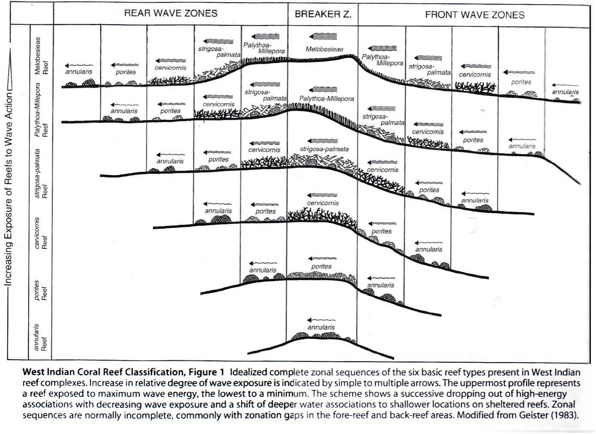
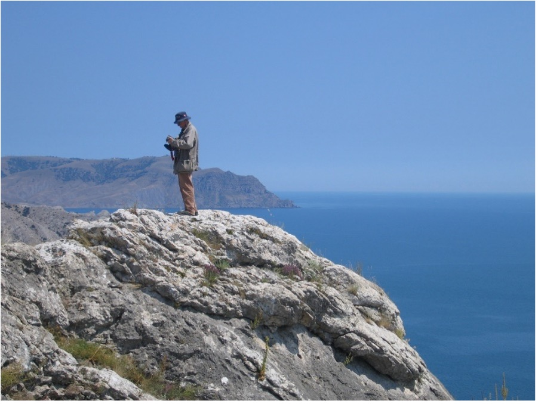

Obituary: Jörn Geister
Jörn Geister, just some words for a life
Jörn GEISTER (Fig. 1) was born on October 29, 1940, in Würbenthal, in the Eastern Sudetes, amidst the turmoil of World War II. The territory, now part of the Czech Republic, had been annexed by the Third Reich two years before his birth. In 1946, he was forced to migrate to Germany with his mother and grandparents. His father had already perished in Berlin with the arrival of the Russian Red Army. He vividly remembered the long journey in a windowless cattle train. After several relocations within Germany—Bavaria, Westphalia, and the Black Forest—where he attended primary school, his family finally settled in Württemberg. In 1960, he completed his Abitur at Wagenburg-Gymnasium in Stuttgart, specializing in mathematics and natural sciences. From 1960 to 1967, he studied geology and paleontology at the University of Stuttgart. During his studies, he spent eight months conducting fieldwork on Jurassic stratigraphy in Spain (Province of Valencia).
His studies were crowned by a Diplomarbeit guided by O. F. Geyer, devoted to the Jurassic stratigraphy of the region of Tabernes de Valldigna (Spain, Valencia Province).
From 1968 to 1970, he obtained financial support for a research stage from the Biology department of the University of Cartagena (Colombia) and then from the Instituto Colombo-Alemán de Investigaciones Cientificas Santa Marta (Colombia) to put a first foot in the ecology of Recent reefs and the systematics of the West Indian coral fauna. This work was crowned in August 1973 by a doctoral thesis defended in Stuttgart, guided by O.F. Geyer, and entitled: “Riffbau und geologische Entwicklungsgeschichte der Insel San Andres (westliches Karibisches Meer, Kolumbien)” [Reef construction and geological development history of the island of San Andres (western Caribbean Sea, Colombia)].
The Colombian islands of San Andres and Providencia will stay in his heart forever. Then he obtained a position at the Geological Institute of the University in Bern in which he will get the status of Assistent, then Oberassistent, Oberassistent-Lektor, and Privatdozent. For many years numerous students were trained by him in macropalaeontology, in lectures and practical courses. From 1974 to 1980 he followed his research on Quaternary Caribbean reefs (Fig. 2) and defended a habilitation in Bern to obtain the Venia Docendi in 1982.
Soon after his habilitation, he organised with René Herb a course in French Géologie et paléoécologie des récifs for the universities of western Switzerland, which is a nice summary of the topic at that time. Since 1992, he had to teach alone micropalaeontology, stratigraphy and historical geology in Bern. But his position was also an opportunity to guide field excursions—he loved that—in Recent and Pleistocene reefs of the Red Sea (Sinai Peninsula) and organize seminars on Holocene and Pleistocene reefs, on sclerochronology, actuopalaeontology, or applied ecology of Recent reefs (among others).
In March 1986 he organized the Symposium “Meeresforschung in der Schweiz [Marine research in Switzerland]” in Bern, with more than 200 participants.
He also took responsibility for various “Diplomarbeiten” on palaeontology in the Jura mountains, Recent reefs or sclerochronology but also the guidance of PhD theses in the frame of a project on Mauritius Island. Thomas Wagner (1994) defended a thesis on: Grundlagen der Sklerochronologie von Riffkorallen und ihre Eignung zur Erfassung von Umwelteinflüssen im Riffökosystem von Mauritius (Indischer Ozean) [Basics of sclerochronology of reef corals and their suitability for recording environmental influences in the reef ecosystem of Mauritius (Indian Ocean)] and Ina Immenhauser-Potthast, (1994) on: Geochemie von rezenten, massigen Korallen und umweltgeologische Untersuchungen im Riffökosystem der Insel Mauritius (Indischer Ozean). [Geochemistry of Recent, massive corals and environmental geological studies in the reef ecosystem of Mauritius Island (Indian Ocean)].
I met Jörn for the first time in 1989 in the Quarry of Malancourt-la-Montagne in Lorraine. We were surrounded by Bajocian reefs and he proposed to collaborate and organise a field excursion on the Jurassic reefs of Lorraine for the Münster (1991) congress of the Fossil Cnidaria and Porifera Association. He already had good experience preparing such events. He had previously prepared the spring excursion of the Swiss Paleontological Society for which he was president (1987-88), it was a three-day excursion near Marseille with J Philip. He had also prepared logistically more difficult events such as the Rio Gurabo Neogene stratigraphy excursion for the 9th Caribbean Geological Conference (Sto. Domingo 1980) with P. Jung und J. Saunders and the Pleistocene Reef Terraces and Coral Environments at Sto. Domingo and near Boca Chica, southern coast of the Dominican Republic, for the same congress.
Then I saw how an excursion had to be prepared. Jörn noted every detail in his notebook, the quality of the food, the price of everything and even the hour of the sunset. Then our excursion happened and we decided to make it again for the pre-congress excursion of the Luxembourg Symposium that we organised together in 1994. Jörn had prepared also a wonderful post-congress snorkelling trip in the Sinai Peninsula. I remember him swimming like a fish, going down at ten meters deep so easily with a shirt and corduroy pants to protect his very white skin. After these events, we decided to build a research project on the climatic conditions of the Jurassic Oxfordian reef event. Together we recruited Bertrand Martin-Garin for a pH D thesis and this was a source of multiple collaborations and field works in France, Switzerland, Morocco, and Crimea (Fig. 3-4) that produced results for a decade beyond the date of his retirement in 2006.
After that date, he became a free collaborator of the Natural History Museum in Bern. In the same decade of activity, he never abandoned the work done on Recent Colombian reefs in collaboration with J.M. Diaz. His fidelity to his Colombian fieldwork allowed him to produce comparable underwater photos of the same reefal place at a 30-year distance (see his 2012 publication). Jörn has never chosen between Recent and Ancient. It was a real strength of his approach, always searching for a comparable scenario in Recent to explain observations of the past. After retiring, he continued working regularly at the Museum in Bern, where he developed a close relationship with Ursula Menkveld, Curator of paleontology, and Bernhard Hostettler, first working as a student as geoscientific preparator and later with the Master and PhD title as a scientific collaborator. Acting as an unofficial advisor, he assisted the latter in defending a Master’s thesis in 2006 on Oxfordian sea urchins (Die fossilen regulären Echiniden der Günsberg-Formation).” For many years he worked at the Natural History Museum as a Associate Researcher, as his own collection came to the museum on permanent loan with the palaeontological collection of the University of Bern.
Jörn was an incomparable colleague and friend, a unique arrangement of rigour and gentleness, endlessly calm, humble, and naturally curious. He took real pleasure in travelling, field working, meeting people, and trying to communicate with them. As he could fluently speak French (he could correct my mistakes), English, Spanish, and Russian in addition to his German mother tongue, this was an opportunity to create bridges between people during congresses and he was always interested in the people behind the projects.
Jörn Geister had undertaken the writing of a comprehensive book about his family’s history, which he was unable to complete before passing away on January 18th at the age of 84, after several years of battling illness. He was married to Marion, a hydrogeologist from Luxembourg, and together they had four children. Today, six grandchildren mourn the loss of their grandfather.

Fig. 1: Jörn Geister in Bern 2019

Fig. 2: The famous Geister’s zonation of Caribbean reefs in its english version (Geister 2011, Jörn published many versions of this model in various languages).

Fig. 3: Jörn Geister in 2005 in Crimea in Simferopol.

Fig. 4: Jörn Geister in 2005 writing his notes in the field on an Oxfordian reef at Sudak.

Fig. 5: Field in Morroco in 2003. From left to right: Bertrand Martin Garin, Jörn Geister and B. Lathuilière
Acknowledgments
I am deeply indebted to Marion Geister, Bertrand Martin Garin and Ursula Menkveld for their invaluable assistance in writing this text and compiling the following list of Jörn’s publications.
Publication list of Jörn GEISTER
GEISTER, J. & GEYER, O.F. (1968). Beiträge zur Stratigraphie und Paläontologie des Juras von Ostspanien. Neues Jahrbuch für Geologie und Paläontologie, Abhandlungen, 131, 310–336.
GEISTER, J. (1969). Contribucion al conocimiento de los arrecifes de Barlovento al Norte de la Isla de San Andres (Mar Caribe, Colombia. In Primer Congreso. Colombiano de Geologia, Bogota. Universidad Nacional de Colombia, Bogota (abstract).
GEISTER, J. (1972). Zur Ökologie und Wuchsform der Säulenkoralle Dendrogyra cylindrus EHRENBERG Beobachtungen in den Riffen der Insel San Andrés (Karabisches Meer, Kolumbien). Mitteilungen aus dem Instituto de Colombo-Alemán Investigación Cientificas 6, 77–87.
GEISTER, J. (1972). Nota sobre la edad de las calizas coralinas del Pleistoceno marino en las Islas de San Andrés y Providencia (Mar Caribe Occidental, Colombia). Mitteilungen aus dem Instituto de Colombo-Alemán Investigación Cientificas, 6, 35–140.
GEISTER, J. (1973). Los arrecifes de la Isla de San Andrés (Mar Caribe, Colombia). Mitteilungen aus dem Instituto de Colombo-Alemán Investigación Cientificas, 7: 211–228.
GEISTER, J. (1973). Pleistozäne und rezente Mollusken von San Andrés (Karibisches Meer, Kolumbien) mit Bemerkungen zur geologischen Entwicklung der Insel. Mitteilungen aus dem Instituto de Colombo-Alemán Investigación Cientificas, 7: 229–251.
GEISTER, J. (1973). Riffbau und geologische Entwicklungsgeschichte der Insel San Andrés (westliches karibisches Meer, Kolumbien). Dissertation Universität Stuttgart. Published in 1975.
GEISTER, J. (1975). Riffbau und geologische Entwicklungsgeschichte der Insel San Andrés (westliches karibisches Meer, Kolumbien). Stuttgarter Beiträge zur Naturkunde, Stuttgart, ser.B, n°15, 203 p., 11 pl., 29 fig.
GEISTER, J. (1976). Los arrecifes de Barlovento al norte de la Isla de San Andrés. Memoria del Primer Congreso Colombiano de Geología (1969), Universidad Nacional de Colombia, Bogota pp. 173-186.
ERFA, A. VON & GEISTER, J. (1976). Über ein holozänes Korallen und Mangroven-vorkommen nahe Santa Marta, Kolumbien. Mitteilungen Institut Colombo-Aleman Investigación Cientificas, 8: 165–186.
GEISTER, J. (1977). The influence of wave exposure on the ecological zonation of Caribean coral reefs. In Proceedings of the Third international Coral Reef Symp. (Miami 1977)1 (Biology) pp. 23–29.
GEISTER, J. (1977). Occurrence of Pocillopora in late Pleistocene Caribbean Coral reefs. In 2ème symposium international sur les coraux et récifs coralliens fossiles. Mémoires du Bureau de Recherches géologiques et minières, 89: 378-388.
GEISTER, J. & UNGARO, S. (1977). The Oligocene coral formations of the Colli Berici (Vicenza, northern Italy). Eclogae Geologicae Helvetiae, 70 (3), 811–823.
GEISTER, J. (1978). Recent coral reefs and geologic history of Providencia Island (western Caribbean Sea, Colombia). In Segundo Congreso colombiano de Geologia, (Bogotá 1978). p. 22.
GEISTER, J. (1978). Paläobiogeographische Beziehungen der Riffkorallenfauna im Jungtertiär/Qartär beiderseits der mittelamerikanischen Landbrücke In Geowissenschaftliches Lateinamerika Kolloquium, Stuttgart. pp. 13–14.
MASCLE, A., BIJU-DUVAL, B., BIZON, G., MULLER, C., SAUNDERS, J., JUNG, P. & GEISTER, J. (1980). Tertiary sequences south of the Cordillera Central. In 9th Caribbean Geologic Conference, Santo Domingo, Field guide D3, pp. 107–138.
GEISTER, J. (1980). Calm-water reefs and rough-water reefs of the Caribbean Pleistocene. In third international Symposium on fossil Cnidarians. Acta Palaeontologica Polonica, Warszawa, (1979), 25(3-4), 541-556.
GEISTER, J. (1980). Morphologie et distribution des coraux dans les récifs actuels de la mer des Caraïbes. Annali dell’Universita di Ferrara, 6, 15–28.
SAUNDERS, J.B., JUNG, P., GEISTER, J. & BIJU-DUVAL, B. (1982). The Neogene of the south flank of the Cibao Valley, Dominican Republic: a stratigraphic study In: Sto Domingo 1980. p. 151–160.
GEISTER, J. (1982). Pleistocene reef terraces and coral environments at Santo Domingo and near Boca Chica, southern coast of the Dominican Republic. In 9th Caribbean Geological Conference (1980) Sto. Domingo, 2, pp.689–703.
GEISTER, J. (1983). Holozäne westindische Korallenriffe: Geomorphologie, Ökologie und Fazies. Facies, 9, 173–284.
GEISTER, J. (1983). Facies geometries and preservational potential of Recent and fossil coral reefs In Biologie et Géologie des récifs coralliens (Colloque annuel ISRS), Nice 1983. 1 p.
GEISTER, J. & HERB, R. (1984). Géologie et paléoécologie des récifs. Inst. Géol. Univ. Berne. pp.1.1-32.16.
GEISTER, J. (1984). Récifs pleistocènes de la mer des Caraïbes: aspects géologiques et paléoécologiques. In GEISTER, J. & HERB, R. (eds.), Géologie et paléoécologie des récifs. Institut de Géologie de l’Université de Berne, pp.3.1-3.34.
GEISTER, J. (1984). Récifs à coraux du Bajocien du Grand-Duché de Luxembourg et de Malancourt en Lorraine, in GEISTER, J. & HERB, R. (eds.), Géologie et paléoécologie des récifs. Berne, Suisse, Institut de Géologie de l’Université de Berne. pp. 12.1-12.16.
GEISTER, J. (1984). Les récifs à Placunopsis ostracina dans le Muschelkalk du bassin Germanique, in GEISTER, J. & HERB, R. (eds.), Géologie et paléoécologie des récifs. Berne, Suisse, Institut de Géologie de l’Université de Berne. pp. 19.1-19.8.
GEISTER, J. (1984). Géormorphologie, écologie et faciès des récifs actuels des Caraïbes: conséquences pour l’interprétation des récifs fossiles. in GEISTER, J. & HERB, R. (eds.)., Géologie et paléoécologie des récifs. Institut de Géologie de l’Université de Berne, pp.1.1-1.14.
GEISTER, J. (1984). Catalogue préliminaire des types et originaux de scléractiniaires fossiles conservés au Muséum d’Histoire naturelle de la ville de Genève. Fossil Cnidaria, 13, 66–72.
GEISTER, J. (1984). Bajocian coral reefs of the northeastern Paris basin: paleoecological aspects. In Advances in reef Sciences. A joint meeting of the Atlantic Reef Committee and the International Society of Reef Studies, 26-28 octobre 1984, Miami. p. 36–37.
GEISTER, J. (1984). Die Paleobathymetrische verwertbarkeit der Scleractinen Korallen. Paläontologische Kursbücher Band 2: Paläobathymetrie, 2, 46–95.
GEISTER, J. (1985). Recent coral reefs of the Colombian pacific Coast. Fossil Cnidaria, 14 (2), 20–21.
GEISTER, J. (1986). Taux de croissance et production de carbonates d’un récif corallien bajocien (Rumelange, Grand-Duché de Luxembourg). Fossil Cnidaria, 15 (2), 13–14.
GEISTER, J. (1986). Reef formation during eustatic cycles. Bajocian and quaternary reefs compared. In Annual Meeting of the International Society for reef studies, Marburg an der Lahn pp. 18-20.
GEISTER, J. (1986). Recent coral reefs and geologic history of Providencia Island (western Caribbean Sea, Colombia). Geologia Colombiana, 15, 115–134.
GEISTER, J. (1988). Lebensspuren von Sauriern (?) und deren Beutetieren im Callovien von Liesberg (Kanton Bern).— Schweizerischen. paläontologischen. Gesellschaft, 67 Jahrversl. 1988, p. 59–66.
RAMSEYER, K., FISCHER, J., MATTER, A., EBERHARDT, P. & GEISTER, J. (1989). A cathodoluminescence microscope for low intensity luminescence. Journal of sedimentary research, 59 (4) 619–622. doi.org/10.1306/212F9016-2B24-11D7-8648000102C1865D.
GEISTER, J. (1989). Qualitative aspects of coral growth and carbonate production in a Middle Jurassic Reef. Memoir of the Association of Australasian Palaeontologists, 8, 425–432.
GEISTER, J. & LATHUILIÈRE, B. (1991). Jurassic Coral Reefs of the Northeastern Paris Basin (Luxembourg and Lorraine). In International Association for the Study of Fossil Cnidaria and Porifera (ed.) Fossil VI. Cnidaria. International Symposium on Fossil Cnidaria including Archaeocyatha and Porifera, Fieldguide.112 pp.
GEISTER, J. (1992). Modern reef development and Cenozoic evolution of an oceanic island/reef complex: Isla de Providencia (Western Caribbean Sea, Colombia). Facies, Erlangen, 27, 1–70. doi.org/10.1007/BF02536804
SHOTYK, W., POTTHAST, I., & GEISTER, J. (1993). Determination of Cd, Co, Cu, Fe, Mn, Ni, Pb and Zn in the skeletons of the the reef-building scleractinian coral Porites from Mauritius Island (Indian Ocean) using Chelation Ion Chromatography. 9th International Conference on Heavy Metals in the Environment, Toronto, Ontario, Canada, September 12-17, 1993, Vol. 2, pp. 37-40.
GEISTER, J. (1994). Snorkeling Trip to coral reefs of the present. (along the Sinai coast, red sea Egypt. Unpublished.
LATHUILIÈRE, B., GEISTER, J. & CHALOT, R. (1994). Les environnements coralliens de l’Oxfordien de Lorraine, témoins des fluctuations du niveau marin et de l’évolution des écosystèmes récifaux Guide de terrain. Association des Professeurs de Biologie – Géologie, 1-27.
LATHUILIERE, B. & GEISTER, J. (1995). Coral reefs in the past, present and future. Proceedings of the second european regional meeting of the I.S.R.S. In: second european regional meeting of the I.S.R.S. Publications du service géologique du Luxembourg, 272 p.
GEISTER, J. (1995). Sclerochronology of Jurassic corals: geological applications, In LATHUILIÈRE,B & GEISTER, J. (eds.), Coral reefs in the past, present and future Service géologique du Luxembourg, 29, 150–152.
DIAZ, J.M., DIAZ-PULIDO, G., GARZON-FERREIRA, J., GEISTER, J., SANCHEZ, J. & A. ZEA, S. (1996). Atlas de los arrecifes coralinos del caribe colombiano. Santa Marta, INVEMAR, Serie publicaciones especiales. N°2, 83 p.
GEISTER, J. & DIAZ, J.M. (1996). A field guide to the atolls and reefs of San Andrés and Providencia (Colombia) In 8th international coral reef symposium, Panama. 41 pp.
BIANCHI, C.N., COLANTONI, P., GEISTER, J. & MORRI, C. (1997). Reef geomorphology, sediments and ecological zonation at Felidu atoll, Maldive Islands (Indian ocean) In Proceedings of the 8th International Coral Reef Symposium, p. 431–436.
DIAZ, J.M., SANCHEZ, J.A. & GEISTER, J. (1997). Development of lagoonal reefs in oceanic reef complexes of the southwestern Caribbean: geomorphology, structure and distribution, In LESSIOS, H.A. & MACINTYRE, I.G. (eds.) 8th International Coral Reef Symposium, Smithsonian Tropical Research Institute, Balboa, Republic of Panama. pp. 779–784.
GEISTER, J. & DIAZ, J.M. (1997). A field guide to the oceanic barrier reefs and atolls of the southwestern caribbean (Archipelago of San Andrès and Providencia, Colombia) In Proceedings of the 8th International Coral Reef Symposium, Vol. 1: 235-262.
GEISTER, J. (1997). Auf der Suche nach dem analogen Korallenriff. Coral Research Bulletin, 5,151–160.
RAMSEYER, K., MIANO, T., D’ORAZIO, V., WILDBERGER, A., WAGNER, T. & GEISTER, J. (1997). Nature and origin of organic matter in carbonates from speleothems, marine cements and coral skeletons. Organic Geochemistry, 26 (5–6), 361–378. doi.org/10.1016/S0146-6380(97)00008-9.
GEISTER, J. (1998). Lebensspuren von Meersauriern und ihren Beutetieren im mittleren Jura (Callovien) von Liesberg, Schweiz. Facies, 39(1), 105-124. DOI:10.1007/BF02537013
ZEA, S., GEISTER, J., GARZON-FERREIRA, J. & DIAZ, J.M. (1998). Biotic changes in the reef complex of San Andrés Island (Southeastern Caribbean Sea, Columbia) occurring over nearly three decades. Atoll Research Bulletin, 456: 1–30
GEISTER, J. (1999). 30 Jahre im Leben eines karibischen Korallenriffes. Profil, 16, 1–11, 13 fig.
DIAZ, J.M., BARRIOS, L.M., CENDALES, M.H., GARZÓN-FERREIRA, J., GEISTER, J., LÓPEZ-VICTORIA, M., OSPINA, G.H., PARRA-VELANDIA, F., PINZÓN, J., VARGAS-ÁNGEL, B., ZAPATA, F.A. &. ZEA, S. (2000). Areas coralinas de Colombia. Invemar ed publicaciones especiales, 5, 176 p.
GEISTER, J. (2000). Time-traveling through a modern Caribbean coral reef Vol. Eighth meeting of Swiss sedimentologists, Fribourg 29th january, 1p.
PANDOLFI, J.M., JACKSON, J. & GEISTER, J. (2001). Geologically sudden extinction of two widespread late Pleistocene Caribbean reef corals In JACKSON, J. B. C., LIDGARD, S. and MC KINNEY, F.K. Evolutionary patterns, growth, form, and tempo in the fossil record, univ. Chicago press, pp.120-158
GEISTER, J. (2001). Un viaje a través del tiempo en los arrecifes de la Isla de San Andres (mar Caribe, Colombia). Noveno congreso latinoamericano sobre ciencas del Mar, pp. 66–68.
GEISTER, J. (2001). Coral life and coral death in a recent Caribbean coral reef: a thirty-year record photographs. Bulletin Tohoku University Museum, 1: 113–123.
MARTIN-GARIN, B., LATHUILIÈRE, B. & GEISTER, J. (2002). Récifs, coraux et climats oxfordiens de la Téthys. Documents du Laboratoire de Géologie de Lyon, 156, 154–155.
CARPENTIER, C., MARTIN-GARIN, B., OLIVIER, N., LATHUILIERE, B., GAILLARD, C., FERRY, S., HANTZPERGUE, P. & GEISTER, J. (2002). Succession des écosystèmes récifaux dans la carrière de Pagny-sur-Meuse (Lorraine): premières considérations sur l’évolution des environnements de dépôt au passage Oxfordien moyen - Oxfordien supérieur. In 3ème Congrès Français de Stratigraphie, Lyon, 8-10 Juillet 2002, Documents du Laboratoire de Géologie de Lyon, 156, 65–65.
MARTIN-GARIN, B., LATHUILIERE, B. & GEISTER, J. (2003). Using fractals to characterize the interspecific variability of corals. In Berichte des Institutes für Geologie und Paläontologie der Karl-Franzens-Universität Graz/Austria (ed.) International Congress on Fossil Cnidaria and Porifera. p. 62.
MARTIN-GARIN, B., LATHUILIERE, B. & GEISTER, J. (2003). Morphométrie, dimensions fractales et coraux. In 3ème symposium ‘morphométrie et évolution des formes’. 1 p.
MARTIN-GARIN, B., LATHUILIERE, B. & GEISTER, J. (2003). Dimensions fractales structurale et texturale pour quantifier les morphologies septales et calicinale des coraux In: Réunion spécialisée SGF «une paléontologie biologique: hommage au professeur Henri Tintant» Dijon, p. 29.
MARTIN-GARIN, B., LATHUILIERE, B., GEISTER, J., CHELLAI, E.H., HUAULT, V. & OURRIBANE, M. (2004). Les associations coralliennes du Jurassique supérieur, une clef de lecture pour la géologie des récifs: exemple du cap Ghir, Haut-Atlas atlantique, Maroc, In Deuxième colloque sur le Jurassique marocain (CJM2), Marrakech, pp. 76–77.
MARTIN-GARIN, B., LATHUILIÈRE, B. & GEISTER, J. (2004) - Structural and textural Fractal dimensions to quantify coral shape at calicular and septal level. In 10th International Coral Reefs Symposium, Okinawa p. 302.
OLIVIER, N., CARPENTIER, C., MARTIN-GARIN, B., LATHUILIÈRE, B., GAILLARD, C., FERRY, S., HANTZPERGUE, P. & GEISTER, J. (2004). Coral-microbialite reefs in pure carbonate versus mixed carbonate-siliciclastic depositional environments: the example of the Pagny-sur-Meuse section (Upper Jurassic, Northeastern France). Facies, 50 (2), 229–255.
MARTIN-GARIN, B., LATHUILIÈRE, B., VERRECCHIA, E. & GEISTER, J. (2007). Use of fractal dimensions to quantify coral shape. Coral reefs, 26, 541–550.
MARTIN-GARIN, B., LATHUILIÈRE, B., GEISTER, J., CHELLAI, E.H. & HUAULT, V. (2007). Geology, facies model and coral associations of the Late Jurassic reef complex at Cape Ghir (Atlantic High Atlas, Morocco). Comptes Rendus Geosciences, 339 (1), 65–74. doi.org/10.1016/j.crte.2006.10.007.
LATHUILIERE, B., GEISTER, J., TKHORZHEVSKY, E.S., YUDIN, S. & MARTIN-GARIN, B. (2007). Oxfordian coral communities of the Donets basin (Ukraine) and their paleoclimatic significance. In Xth international Congress on Fossil Cnidaria and Porifera, St Petersburg. pp. 56–57.
GEISTER, J., LATHUILIÈRE, B. & YUDIN, S. (2007) - Late Jurassic coral reefs and their paleo-relief at Sudak (South coast of Crimea peninsula, Ukraine). In Xth international Congress on Fossil Cnidaria and Porifera, St Petersburg 12-16 august 2007, p. 38.
GEISTER, J. & DIAZ, J. M. (2007). Ambientes arrecifales y geología de un archipiélago oceánico : San Andrés, Providencia y Santa Catalina. (Mar Caribe, Colombia) con guía de campo Instituto Nacional de Investigaciones Geológico Mineras (INGEOMINAS), 114 p.
GEISTER, J. & DIAZ, J.M. (2008). Reef Environments and Geology of an oceanic archipelago: San Andrés, Old Providence and Santa Catalina (Caribbean Sea, Colombia). Boletín geológico Instituto Nacional de Investigaciones Geológico Mineras, 104 p.
MARTIN-GARIN, B., LATHUILIÈRE, B., GEISTER, J. & RAMSEYER, K. (2010). Oxygen isotopes and climatic control of Oxfordian coral reefs (Jurassic, Tethys). Palaios, 25, 721–729. doi.org/10.1007/s10347-010-0259-4.
GEISTER, J. (2011). West indian coral reef classification, In Hopley, D., Encyclopedia of modern coral reefs, structure form and process Springer. pp. 1171–1174.
MARTIN-GARIN, B., LATHUILIÈRE, B., GEISTER, J. & RAMSEYER, K. (2012). Climatic control of Oxfordian reef coral distribution (Late Jurassic). In 12th international Coral Reef Symposium, p. 26.
GEISTER, J. (2012). Time travelling in a Caribbean coral reef (San Andres Island, western Caribbean, Colombia). In the 15th Symposium on the Geology of the Bahamas and other Carbonate Regions, pp. 7–17.
MARTIN-GARIN, B., LATHUILIÈRE, B. & GEISTER, J. (2012). The shifting biogeography of reef corals during the Oxfordian (Late Jurassic). A climatic control? Palaeogeography, Palaeoclimatology, Palaeoecology, 365-366 (2012): 136–153. doi.org/10.1016/j.palaeo.2012.09.022.